Enquête Maths 3 2017 (C1223 / S1224)
By Sébastien Boisgérault, Mines ParisTech
7 février 2017
Contents
Nombre de participants à l’enquête 2017: 88
Résultats des enquêtes 2016 (et 2017):
Général
Votre satisfaction globale (formule Ski-Maths ou Maths 3 à Paris)
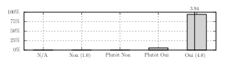
L’enseignement est adapté à votre niveau/formation en Mathématiques
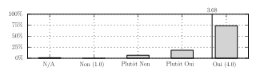
L’enseignement vous a semblé intéressant et/ou utile.
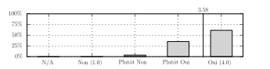
Contexte.
La formule 2017 du cours d’analyse complexe:est basée sur un nouveau programme de cours et d’exercices.
est soutenue par un nouveau “poly” (au formats papier / ebook / HTML)1.
introduit le tutorat comme une alternative aux cours magistraux.
complète les ateliers dédiés aux applications du cours (une nouveauté 2016) par l’alternative d’une session de révisions.
Les trois critères testés sont en progression par rapport à 2016:
La satisfaction globale2 passe de 3.70 à 3.94.
L’adéquation au cursus passe de 3.51 à 3.67.
L’intérêt/utilité de l’enseignement passe de 3.41 à 3.57.
Le cours
Format
Le format du cours auquel vous avez participé (cours magistral ou tutorat) vous convient
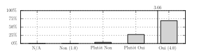
Tutorat.
En 2017, sur la base du volontariat, 16 personnes ont participé à un tutorat en remplacement des cours magistraux. Cette formule était destinée3 à des étudiants préférant aborder le cours de façon plus autonome, par la lecture du polycopié, avec un enseignant présent (Arnaud Larroche) pour donner une perspective, les conseiller dans leur démarche et répondre à leurs questions. Il s’agissait à la fois de répondre au problème de places disponibles dans l’amphi aux Arcs liée à l’augmentation des effectifs et de rechercher des solutions adaptées aux processus d’apprentissages de chacun 4.Tous les commentaires des étudiants concernant la formule du tutorat sont très positifs5. Les appréciations des étudiants inscrits en tutorat concernant le format du cours, la qualité du contenu et la prestation de l’encadrant sont excellentes, identiques à celles de la formule classique.
Qualités
Votre encadrant était dynamique/compétent/pédagogue/etc.
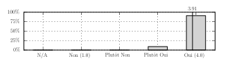
Le programme/contenu des cours est globalement bien conçu.
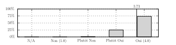
Ces appréciations concernent le cours magistral (à Paris avec Lionel Rosier, aux Arcs avec Sébastien Boisgérault) ainsi que le tutorat (aux Arcs avec Arnaud Larroche). Les appréciations du cours parisien6 sont tout à fait conformes à la tendance générale (comme les années précédentes).
Plus de détails dans les commentaires consacrés au cours (en annexe).
Sessions
Les sessions du cours qui vous ont posé problème (pas intéressantes, ou trop ambitieuses, pas claires, etc.):
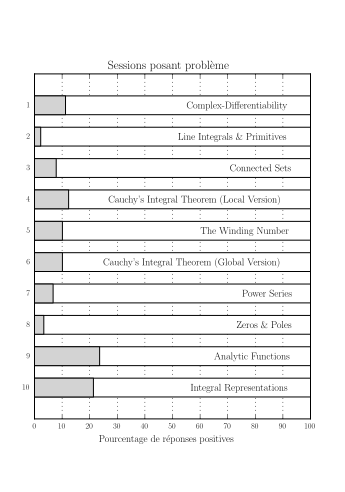
Aucune séance ne semble poser de problème à une majorité d’étudiants. La séance consacrée aux ensembles connexes (session 3) – un point qui était perçu par le passé comme difficile – semble dans la nouvelle version du court poser problème à moins d’un étudiant sur dix. Le “point culminant” du cours, consacré à la version globale du théorème intégral de Cauchy (session 6) ne pose également n’est pas non plus listée comme une séance à problème.
Les deux dernières sessions ont posé problème à un étudiant sur cinq. Une explication possible: leur contenu est peu ou pas illustré en travaux dirigés; c’est l’explication mise en avant dans deux commentaires7. Les travaux pratiques se concentrent en effet en fin de semaine sur les sessions 6, 7 et 8 et sont en cela relativement similaires au déroulement des travaux dirigés 2016. L’articulation entre cours et travaux dirigés en fin de semaine pourrait donc être améliorée, d’autant que certains étudiants apprécient peu les dernières séances de travaux dirigées, jugées trop calculatoires8.
Certains étudiants font la remarque que les cours les plus difficiles sont plutôt programmés le soir (alors qu’ils sont sans doute plus réceptifs le matin)9. On ne retrouve toutefois pas globalement cette tendance dans les réponses (les sessions du matin sont les 1, 3, 5, 7, 9 et celles du soir les 2, 4, 6, 8, 10).
Les PCs (travaux dirigés)
Votre responsable de PC était dynamique/compétent/pédagogue/etc.

Les exercices sont adaptés / permettent d’assimiler le cours
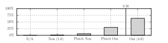
Les PCs – contenus et encadrants – sont très appréciées; les moyennes sur les deux critères sont virtuellement identiques à celles de 2016. Les différences entre groupes de PC sont assez faibles (toutes les PCs sont au-dessus de 3.0 sur les deux critères et les appréciations des PCs parisiennes sont tout à fait conformes à la tendance10).
La principale critique faite aux PCs, de très loin, est le rythme imposé, jugé par beaucoup d’étudiants trop rapide (cf. Les PCs (travaux dirigés) – commentaires). Cette remarque est également présente dans les questionnaires des années précédentes, mais pas à ce point: une quinzaine de commentaires mentionnent cette année un rythme “un peu rapide” (le plus souvent) à “très/trop rapide” (plus rarement). A contrario, une (seule) personne mentionne explicitement que le rythme imposé permet de prendre son temps11. Cela pose la question d’un “réglage” des objectifs des PCs (sachant que les corrections de tous les exercices sont désormais disponibles).
La seconde critique, beaucoup moins marquée, concerne le caractère parfois “magique” (peu intuitives) des solutions aux exercices12.
La troisième critique concerne les conditions matérielles des PCs aux Arcs, dans un lieu qui n’est pas forcément adapté à ce type d’exercice13. Ce contexte étant connu de tous, cette critique est relativement tempérée.
7 étudiants mentionnent – toujours de façon très positive – les rappels de cours pratiqués par deux des chargés de PC (Pauline Bernard et Jean Auriol). Si cette pratique peut paraître surprenante (les PCs suivent directement le cours), elle est régulièrement plébiscitée, ce qui pose la question de la systématiser. Par ailleurs, elle semble bien compléter un cours magistral aux Arcs jugé rapide et parfois un peu destructuré14 (cf. Le cours – commentaires 11, 18).
Ateliers (ou révisions)
Votre encadrant était dynamique/compétent/pédagogue/etc.
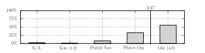
Le contenu de l’atelier (ou des révisions) était intéressant et/ou utile.
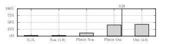
Les ateliers dédiés aux applications de l’analyse complexe sont bien appréciés (le principe, le contenu et la mise en oeuvre). Toutefois les évaluations sont plus variables d’un atelier à un autre que pour les PCs, voire au sein d’un même atelier; les appréciations ne sont pas forcément les mêmes qu’en 2016 (même pour un atelier donné encadré par le même enseignant), ni les effectifs (les étudiants choisissent, dans la limite de quotas, l’atelier auquel ils assistent).
Concernant l’atelier “Complex-Step Differentiation”, des commentaires15 plaident en faveur d’un rythme plus rapide qui permettrait d’aborder les méthodes spectrales, une seconde partie de l’atelier que nous avions choisi de ne pas traiter en 2017 (comme en 2016). Le renforcement du programme de calcul scientifique en classe préparatoires (et/ou aux Mines) justifie peut-être cette adaptation.
La séance de révisions, basée sur l’examen 2016, est une option offerte en remplacement des ateliers. Elle a fait le plein (30 places) et a été gratifiée d’excellentes appréciations, supérieures à la moyenne des ateliers. Les commentaires16 mettent en évidence que contrairement aux PCs – dont le rythme est très soutenu – le rythme de cette séance est adapté et permet de réfléchir par soi-même.
Ressources
Polycopié
Le polycopié (support des cours, PC et ateliers) vous a satisfait
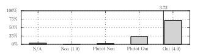
Le polycopié est apprécié; plusieurs étudiants regrettent le “bug” – désormais corrigé pour les documents en ligne, mais un peu tard – qui a fait disparaître les numéros de pages (cf. Les resssources associées au cours – commentaires 3, 4, 7, 10, 11).
Langue
Vous pensez que l’usage de l’anglais est une bonne idée
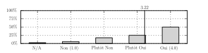
Contexte.
Le polycopié et les ressources disponibles sur internet sont sauf exception en langue anglaise mais toutes les interventions orales sont faites en français. Le sujet d’examen sera disponible dans les deux langues.Une majorité d’étudiants (\(\sim75\%\)) est favorable ou plutôt favorable à l’utilisation de l’anglais. Les commentaires relatifs à ce sujet17 sont plutôt favorables, mais montrent également que la question ne fait pas consensus. A priori, les données recueillies n’expliquent pas complétement le clivage; néanmoins les admis sur titres (\(\sim10\%\) des participants) sont surreprésentés dans les avis défavorables (\(\sim30\%\)) et plutôt défavorables (\(\sim20\%\)).
Autres
Les ressources utiles de http://eul.ink/complex-analysis/:
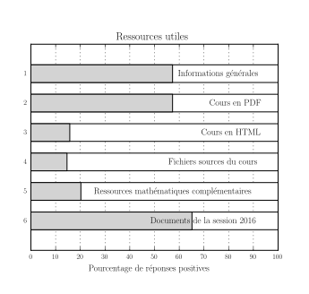
Plus de détails dans les commentaires consacrés au ressources (en annexe).
Trousse de secours
C’est presque un étudiant sur cinq a utilisé les trousses de secours mises à leur disposition par l’Ecole.
Dans les besoins listés par les étudiants (cf. Trousse de secours – besoins), il a pu manquer des pansements double peau pour les ampoules et des anti-inflammatoires. Les pansemeents double peau ne sont pas fournis en raison de leur coût. Quant aux anti-inflammatoires, ce sont des produits qui sont pas totalement anodins; il semble donc difficile de les inclure dans des trousses de soins qui sont en libre accès. L’information donnée en amont aux étudiants quant à leurs besoins probables pourrait par contre être précisée pour inclure ce type de produits.
Annexes
Général – commentaires
Cours intéressant et très bien construit par son enchainement et la rigueur de son approche. Le format avec ski pendant la journée est très bien adapté !
Présentation dynamique et intéressante !
Une semaine formidable, merci encore !
Agréable de retrouver des maths “type prépa”, plus intéressantes que maths 1 & 2 selon moi !
encore des maths
Le cours était en très bon équilibre entre reprise de certains résultats et notions que j’avais vues en prépa (connexité par arcs, séries entières) et approfondissement et extension vers de nouvelles notions de l’analyse complexe.
Je mets ici un commentaire global sur la semaine. Tout ce qui est autour du séjour était vraiment très bien. Le centre était vraiment très agréable et pouvoir être au pied des pistes est une chance incroyable. Merci énormément pour cette formule!
Par ailleurs, le format de deux séances de cours +PC matin et soir était bien adapté pour la concentration.
Les ateliers du samedi sont un plus pour pouvoir voir quelques application.
Les conditions sont parfaites pour nous faire assimiler ce cours efficacement : semaine intensive de maths (contrairement aux cours de maths 1 et 2 espacés dans le semestre) et ski toute la journée en récompense. Merci beaucoup pour tout !
C’était sans aucun doute le cours de maths le plus intéressant que j’ai pu suivre aux Mines jusqu’à présent. Quant à son utilité, le fait d’organiser des ateliers en fin de semaine est une excellente idée pour montrer les diverses applications du cours.
L’enseignement se prête très bien à notre cursus. Dépendant assez peu de Maths 1 et de Maths 2 (qui finalement restent moins inscrits dans notre esprit que ce que l’on a fait en prépa), il était à la fois très intéressant et assez abordable puisque de nombreuses notions sont reprises (Connexité…)
Je trouve que le format 2 heures le matin et 2h le soir avec 1h d’amphi puis 1h de PC est parfaitement adapté au module : il permet de lire et s’approprier le cours, de le comprendre en profondeur grâce au PCs et d’éviter la frustration en laissant des plages horaires conséquentes au ski
Cours intéressant, mais difficile d’assimiler un cours, qui m’a paru assez technique, en si peu de temps.
Le cours est bien construit, on voit où on veut aller.
L’enseignement ne m’a pas semblé particulièrement intéressant, mais il était très bien enseigné, les amphis étaient top. Seulement l’analyse complexe reste très très abstrait pour moi…
Parfait
j’ai trouvé le cours très intéressant et adoré le principe du tutorat
Enseignment agreable car très dynamique avec un effort de pédagogie très agréable
Je ne prévois pas de faire des maths appliquées mais c’était assez intéressant .
prof de Pc génial !!
Partie très importante de l’analyse dont les applications sont étonnamment utiles et variées comme les ateliers l’ont montré.
Même si les ateliers permettent de comprendre l’avantage obtenu avec l’analyse complexe c’est un peu tôt pour savoir si ça me sera utile. Je ne compte pas faire d’automatique par exemple.
Très bonne formule stimulant l’apprentissage dans un cadre idyllique, j’espère que ce système perdurera.
Le cours est très clair et les applications permettent de comprendre directement à quoi sert le cours et pas forcément à trouver une fonction magique comme en maths 1 ou 2
Même si je n’était pas en tutorat, je vous avoue que j’ai plus lu le Poly que je vous ai écouté. Je pense cependant que ça m’a été plus utile, car j’étais plus concentré et j’avance mieux avec le support écrit
J’avais déjà fait le cours mais il était complet et bien construit.
Le cours – commentaires
les sessions les plus compliquées étaient globalement le soir alors que j’ai trouvé qu’on était plus en forme le matin, c’est un peu dommage !
Le cours présenté par Pauline était très clair (même si elle devrait parler plus fort), avec M. Boisgérault globalement c’était dynamique mais peut-être le temps devrait-il être un peu mieux géré pour passer moins de temps sur les notions du début de chapitre et ne pas avoir à se dépêcher à la fin quand ça devient plus complexe
J’ai eu beaucoup de problème pour la compréhension, mais ceci est dû à mon cursus duran lequel je n’ai pas fait de maths a un niveau suffisant pour comprendre.
Cours très intéressant, chapitres ni trop longs ni trop courts pour être faits en 1h
Le tutorat est une excellente idée si l’on veut avancer à son rythme.
Des fois vous étiez un peu à court de temps en fin d’heure, ce qui vous forçait à accélérer le rythme, peut-être que 15min de plus donnerait un peu de marge (et 15min de moins pour le ski ce n’est pas trop grave à mon avis)
La différentiabilité est une notion complexe (confondre différentielle, dérivée, dérivées partielles, …), c’est pourquoi ce cours me paraissait un brin plus obscur que les autres, alors qu’il reposait surtout sur des acquis de prépa. Il s’agit peut-être d’un cas assez personnel.
Cours très intéressant et abordable avec des notions rappelées au début de chaque chapitre
Le cours et les PC va peut-être parfois un peu vite. Serait-il envisageable de rajouter quelques heures de Maths 3 en dehors de la semaine de Ski-Maths ?
Très bien amené, de façon dynamique, et très pédagogue
Le cours en amphi était très accrocheur et intéressant. Seul petit bémol sur le cours au tableau : j’aurais préféré un tout petit peu plus d’indications au niveau du suivi du plan de poly (par exemple : mettre des titres de parties, indiquer si c’est une propriété/théorème,….)
Concernant les conditions pratiques, la salle de cours n’était pas vraiment adaptée. Si on voulait suivre le cours dans de bonnes conditions, il fallait arriver en avance pour être dans les deux premiers rangs. (mais j’ai conscience ue le centre UCPA n’est pas destiné à donner des cours)
Bonne progression
Quelques difficultés de compréhension sur la notion de différentiabilité. Sûrement les mêmes que pour la différentiabilité dans R.
Notion de fonction analytique encore assez flou quant à leur utilisation.
Un peu rapide, mais prof très dynamique !
ne pas faire d’exercices sur ces deux derniers chapitres n’a pas aidé à leur compréhension.
Dynamique, clair et précis. J’ai apprécié les utilisations de schémas et dessins pour illustrer les propos. L’accent est principalement porté sur la compréhension, ce qui est très appréciable.
Je n’ai pas grand-chose à dire, le cours était globalement très bien présenté, et surtout captivant.
Ce que j’ai aimé dans le cours:
Extrêmement dynamique, vous avez essayé de nous faire sentir des idées profondes plutôt que de simplement faire des démonstrations de manière mécanique. Cela aide grandement à la compréhension, les cours étaient très agréables.
Ce que j’ai moins aimé:
Le bruit en amphi. Vous n’y pouvez pas grand chose et j’étais moi même dans les premiers rangs, mais la salle reste quand même je pense assez peu adapté aux cours magistraux et l’attention vite dissipée après une journée de ski.
Un manque d’organisation au sein des chapitres au moment où vous faites le cours. Je ne l’avais pas forcément remarqué avant d’avoir cours avec Pauline, mais son organisation très carrée (Def: / Théorème: // I) // II) ….) était très appréciable à mon sens
Le manque de temps. Personnellement, j’aurais préféré que vous ayez des créneaux d’1h15, quitte à moins skier, pour que vous n’ayez pas à vous précipiter à chaque fin de séance.
Comme l’attestent mes notes, mon avis général sur le cours est toutefois très très positif !
Selon moi, le tutorat est un excellent compromis pour les personnes qui ont du mal à rester concentrés lors de cours magistraux et qui préfèrent s’approprier le cours par eux-mêmes avec l’aide d’un encadrant répondant à toutes les questions, même les plus farfelues (Bravo Arnaud !)
Tutorat parfait!! devrait être appliqué à plus de cours aux Mines…
les notions sont très bien expliquées en amphis mais les pc restent très dures. On n’a pas le temps de prendre du recul sur le cours avant la pc car elle suit juste l’amphi
Trop de temps consacré aux séries entières, mais parfait pour le reste.
très intéressant
pas un chapitre qui me vient en tête particulièrement
Très dynamique et agréable à suivre
Niveau du cours assez homogène, pas de difficultés particulièrement plus élevées que les autres. Cours très apprécié. Dynamisme de M. Boisgérault très apprécié !
Il est très difficile de suivre depuis le fond de la classe. Le cours au tableau est beaucoup plus vivant que les slides en amphi!
Il faudrait essayer de mettre les passages vraiment difficile le matin et pas le soir
Les notions d’angles sont parfois difficiles à se représenter
Le cours est très bien mené et permet de prendre les gens en douceur sans être trop ennuyant.
Le cours est très dynamique avec une interaction avec les élèves, vous ne faites pas une récitation comme certains enseignants mais vous faites vivre votre cours ce qui permet de ne pas s’endormir même après 6 h de ski. La présence obligatoire en amphi et les PC qui suivent le cours permettent de bien suivre et de comprendre ce qui est plus difficile à PARIS puisqu’on a tendance à faire autres choses en même temps(asso…)
Bon et intéressant dans l’ensemble
Intéressant, parfois on ne comprend pas bien le lien entre les chapitres
Super. Et le tutorat est une super idée !
Positif : l’autonomie du tutorat.
Les PCs (travaux dirigés) – commentaires
Jean était très dynamique et expliquait bien, mais allait parfois trop vite ! J’aurais préféré faire moins d’exercices, notamment sur la 1e PC, et mieux comprendre ceux qu’on a faits (d’autant que les corrigés sont à la fin du livre donc faire des exercices pour en faire le plus possible n’est pas nécessaire…)
Bien présentées, explications claires, par contre beaucoup d’idées semblent parachutées (comment sommes-nous censés penser seuls à tel ou tel chemin ou telle ou telle fonction à introduire quand ce n’est as du tout évident…)
Trop rapides sans énormément d’explications… les résultats semblaient “tomber du ciel”, la classe ne participait pas beaucoup. La parole était souvent donnée aux bons éléments ce qui avait tendance à laisser les autres perplexes. Peut être cela aurait été une bonne chose de donner des exemples concrets d’application pour aider à la compréhension des PCs.
Encadrante dynamique, claire et pédagogue, prenant toujours le temps de répondre à nos questions. Un vrai plaisir !
Un peu rapide pour moi
Exercices bien adaptés pour mieux retenir et comprendre les formules du cours
Bien
Les choses vont parfois un peu vite… Pas toujours évident de suivre
Très bien, ça permet de mettre en pratique immédiatement les théorèmes vus en cours
Le seul problème est matériel, et je comprends la difficulté d’avoir ce qu’on veut à l’UCPA, mais un vrai tableau serait super à la place d’une planche de papier qui disparaît dès que la dernière ligne est écrite, ce qui n’est pas pratique pour la prise de note (c’est d’ailleurs super que les corrigés soient dans le poly); même chose pour les tables, certains groupes en avaient, mais pas le mien, et ce n’est pas pratique. Encore une fois, je comprends la difficulté, et je suggère simplement un axe d’amélioration.
peut être un peu chargées, on a toujours du finir à la hâte pour rester dans les temps
Peut-être un peu beaucoup d’exercices pour le temps imparti, ce qui donne des PC assez intenses
J’aime bien les PCS. Cela m’aide beaucoup à mieux comprendre les contenues du cours. La responsable est dynamique. Elle a fait un résumé des points importants avant chaque PC que le trouve assez utile pour moi.
Il est d’abord intrigant d’avoir pour professeur un ami, mais Marin s’est parfaitement adapté à la situation. Relativement clair dans ses explications et efficace pour répondre aux questions, il a été tout à fait à la hauteur, nous évitant les calculs “moches” mais prenant son temps sur la méthode. Bientôt un professeur en cours “traditionnel” ?
Clair, précis et efficace
Très bien !
Marin s’est amélioré tout au long de la semaine, jusqu’à devenir très pédagogue et interessant
pas le temps de réfléchir
Le contenu des PCs était parfois mal calibré sur l’heure donnée. Pour deux,trois chapitres il y avait un peu trop d’exercices et on traitait le dernier exercice en vitesse. Dans ce cas, j’aurais préféré dépasser un peu sur le temps pour bien finir la PC quitte à partir sur les pistes un quart d’heure plus tard plutôt que de se dépêcher.
Concernant des conditions pratiques, je reconnais que le centre UCPA n’est pas adapté pour des cours mais les salles étaient assez mal pratiques. Des places sur le côté étaient assez excentrées du tableau et on avait du mal à tout voir.
ça allait parfois un peu vite, et il y avait de nombreuses petites fautes au tableau qui faisait que je prenais du retard pour essayer de bien comprendre
Les exercices permettent de bien assimiler le cours. C’est bien d’avoir les corrigés en fin de manuel (pour les exos éventuellement non traités).
Bon format. Les rappels des points principaux du cours en début de PC étaient appréciables.
La correction des exercices va beaucoup trop vite. On a à peine le temps de noter, et si on s’arrête deux minutes pour essayer de comprendre, on a trois tableaux de retard …
De plus, beaucoup d’exercices reposent sur des astuces, on pose tel chemin biscornu et hop ca marche… a la question “mais comment on fait pour trouver ça?”, la réponse “l’expérience” est un peu décourageante …
Les rappels en début de PC étaient utiles et permettent de cible les points essentiels du cours.
Rien à dire, c’était parfait. Le temps imparti était peut-être un peu court pour traiter tous les exercices voulus, ce qui obligeait à passer un peu vite sur certains points. Mais sinon tout était très clair.
Victorin était très sympa, l’ambiance vraiment détendue.
Mes remarques à son sujet sont les suivantes:
Même remarque que pour l’amphi, ca va (un peu) vite et c’est dommage. Pourquoi ne pas prendre un peu plus de temps (quitte à moins skier ou à faire un exercice de moins/ ne pas le finir)
Le tableau (un ensemble de feuilles que l’on retourne) était absolument infâme. Tout petit, on devait changer régulièrement de feuilles et comme Victorin est gaucher, il écrivait souvent devant le tableau (à droite de la salle) et du coup on avait pas le temps de lire/écrire que la feuille était tournée (une conséquence du manque de temps patent accordé au cours selon moi).
L’autre conséquence de cela est que les deux derniers rangs de la salle étaient très néfastes pour la prise de note. Personnellement, arrivé trop tard en PC, j’ai passé une PC au dernier rang. Je reste convaincu que j’aurai mieux fait de ne pas y aller, mes notes sont partielles donc quasiment inexploitables et l’attention portée à la lecture (très difficile puisque le tableau est bas) nuit gravement à celle portée à l’écoute du raisonnement
-Victorin a parfois une tendance à s’autocritiquer/ s’embrouiller qui peut nuire à la compréhension du raisonnement. A l’inverse, il a parfois une vision très proche de la notre des raisonnements, l’abordant comme s’il avait nos connaissances, ce qui permet de rendre la PC très profitable
La qualité des exercices traités s’est détériorée au cours de la semaine : ils étaient très intéressants les 3 premiers jours et sont devenus calculatoires et redondants en fin de semaine
Peu de progression dans la difficulté des exercices, ce qui donne l’impression d’être un peu noyé. C’est cependant compréhensible vu le peu de temps dont on dispose
Parfois un peu trop d’exercices, on n’a pas assez le temps de les chercher.
Un peu trop chargées
Exercices bien choisis, qui permettent de bien assimiler les notions vu en amphi parfois rapidement !
je n’avais pas le temps d’assimiler les notions (ex différentielles, indices…)
Parfait
Très bien, même si le timing avait toujours l’air très court.
très bien aussi même si les dernières pc me paraissaient trop calculatoires et ennuyeuse
RAS
Jean a très bien fait son travail : les rappels de cours permettaient de synthétiser rapidement l’essentiel du cours, les exercices étaient bien traités, et le système de questions de cours orales aléatoires était très bien pour mémoriser les résultats de cours.
Tres agreable de prendre son temps pour bien comprendre
Un peu trop rapide
Les exercices permettent bien d’assimiler le cours, mais sont trop compliqués pour être aborder seul.
Il faut peut-être ne pas traiter tous les exercices en PC, surtout que la correction permet de les utiliser pour réviser l’examen
Si on peut accorder un peu plus de temps pour les PCs. Merci
Les rappels de cours en début de Pc sont vraiment appréciables
Le rappel en début de cours est juste génial ! Les questions à la fin sont stressantes mais utiles et les questions en cours d’exposé rendent la PC vivante. De plus le fait que personne ne vienne au tableau permet d’avoir un exposé fluide et dynamique plutôt qu’un long spectacle de torture ennuyeux
Les rappels en début de PC étaient particulièrement utiles, et la PC était sinon bien construite
on travaille pas assez en autonomie
Très bien de faire un rappel de cours au début. Ca va un peu vite.
Jean est un chargé de pc génial !
On pourrait prévoir un temps pour réfléchir avant aux exercices.
Ateliers (ou révisions) – commentaires
Contenu intéressant et bien présenté, bien d’avoir eu les exercices à la fin
Encadrante dynamique et investie ! Peut-être laisser un peu plus de place en début de séance à l’introduction de la notion et à l’utilité de l’analyse complexe dans ce cours
Cela m’a permis de clarifier quelques points
Amusant et intéressant de voir une application concrète des fonctions holomorphes. D’autant plus qu’on est pas mal aux Mines à utiliser Photoshop ou Gimp et qu’on peut appliquer le cours sur un outil qu’on utilise souvent mais dont on ne connaissait pas le fonctionnement
C’est dommage que la partie intéressante, à la fin, n’ait pas été abordée plus rapidement afin d’y consacrer plus de temps, à cause du temps passé sur le début, moins utile…
Très bien
Trop de temps a été passé selon moi sur les méthodes réelles de calcul de la dérivée, que nous avions déjà vues en prépa, et qui n’avaient pas grand rapport avec le cours (quoique nous étions prévenus que cet atelier serait le moins complexe…). Il auarait été appréciable de se pencher davantage sur les méthodes complexes.
Très intéressant, mais Pauline devrait avoir un peu plus confiance en elle et s’affirmer
Dommage de se cantonner au chapitre du livre et de ne pas faire plus d’application, mais très bien d’avoir une idée de l’utilité de l’analyse complexe
correction trop lente (mais pas de beaucoup)
J’ai plutôt trouvé qu’il s’agissait d’un cours sur ce thème avec un exposé de notions et résultats plutôt qu’un “atelier”.
Et le contenu de l’atelier était un peu ambitieux pour le temps consacré.
Atelier très intéressant, j’aurais bien poussé encore plus loind l’application.
Idée : ajouter à l’exposé un côté “pratique” plus grand. Par exemple : un exercice supplémentaire, une (courte) mise en pratique informatique (ce qui supposerait quand même qu’il y ait assez d’ordis dans le groupe)
Très intéressant de pouvoir avoir une application de l’analyse complexe.
Très intéressant. Enfin un cours de maths où on voit des applications !
Peut-être donner des pistes pour aller plus loin sur le thème
Victorin (que j’avais en PC) s’est, très sincèrement, totalement embrouillé pendant la présentation de l’atelier. Bien que j’ai compris les idées principales de l’atelier, la présentation approfondie et les démonstrations étaient très très confuses alors que c’était censé être un atelier abordable. Dommage…
Malgré la faible présence d’analyse complexe au sein de ce module, l’atelier était particulièrement clair et intéressant !
Nous n’avons pas eu le temps de tenir l’atelier.
Bonne synthèse pour les révisions
Très bon format, qui permet à chacun de s’y retrouver selon ses envies. A maintenir pour la prochaine fois !
ils expliquaient très très bien, de façon très lente en détaillant tout, en ne prenant rien pour acquis, c’était parfait j’ai tout compris
Très bien de finir sur une application.
intéressant
génial pour faire un peu de maths appliquées, j’y allais avec un peu d’appréhension et c’était vraiment top !
Faire des maths appliqués donne une dimension plus intéressante au cours.
Atelier un peu lent. Les résultats de discrétisation des théorèmes continues n’étaient pas si surprenants.
C’est effectivement bien pour ceux qui ont un peu de d“difficultés. Cela nous oblige à chercher de nous même. Le problème étant que souvent en PC, le rythme est soutenu et convient au meilleur de la PC.
La séance de révision m’a bien permis de revoir tous les théorèmes principaux du cours. Comme nous n’avons pas le temps de relire le cours pendant la semaine au ski entre les amphis, c’était bien d’avoir une séance plus à son rythme pour relire le cours et faire un récapitulatif de la semaine.
Le rythme était très adapté pendant la semaine, mais avoir 3h le vendredi rendait le tout difficile à suivre, surtout à la fin
J’ai bof apprécié mais au moins j’ai compris un intérêt de l’analyse complexe pour l’informatique
Mêmes commentaires que précédemment. Cependant il est dommage que l’exemple de l’image ne suive pas l’ensemble de l’exposé … Est-il possible d’exposer la résolution avec comme support l’image ?
Contenu intéressant permettant d’appliquer le cours
Bien mais on n’avait pas eu le temps de revoir le cours donc pas aussi utile que prévu.
Les resssources associées au cours – commentaires
Ressources complètes, disponibles et de très grande qualité, permettant une très bonne pérennisation du contenu du cours. C’est une chose rare !
À ma connaissance peu de personnes connaissait le lien du site, un peu plus de com la dessus ne ferait pas de mal (il faut insister avec les mineurs)
Le polycopié est remarquable, surtout comparé à ce que l’on a pu rencontrer en 1A.
Il ne manque que la pagination !
Je viens de découvrir le lien !
Je ne suis jamais allée consulter les ressources en ligne à ce jour, je n’en ai pas ressenti le besoin. Cependant, je pense que certaines d’entre elles sont pratiqués pour approfondir le cours et préparer la pâle.
Numéroter les pages et les exos serait bien utile !
Pour un cours en anglais, je comprends qu’il est bienvenu de se familiariser avec les termes spécifiques (puisque pour ceux qui approfondiront ce domaine, la littérature la plus riche sera en anglais). Cependant, je trouverais beaucoup plus pratique pour les révisions d’avoir un cours en français.
Usage de l’anglais dans le cours TRES positif.
Je ne comprends pas le sens de la question sur le site… Je n’en avais d’ailleurs pas connaissance.
Il faut absolument mettre des numéros de pages au poly !!!
Le polycopié est très complet et très bien fait. Dommage qu’il manque le numéro des pages.
Le cours réalisé en amphi était très complet et retranscrivant l’intégralité de ce qui y était dit (et Victorin présentant à chaque fois correctement les exos) je n’ai encore aujourd’hui pas ouvert le poly. Mon avis sur la pertinence du poly n’a donc pas d’intérêt à l’heure actuelle.
Toutefois, je trouve l’usage de l’anglais extrêmement intéressant pour nous forcer à l’utiliser (au moins dans le poly) et je souhaiterai vivement une généralisation dans d’autres cours.
Les ressources informatiques ne m’ont pas encore été utile mais les documents de 2016 me serviront probablement grandement.
pas utilisées
non utilisées jusqu’à présent, difficile de dire
L’usage de l’anglais est une excellente idée (pourquoi pas même faire les cours ou les PC en anglais ?).
La direction de l’enseignement nous demande d’effectuer notre stage de fin de deuxième année obligatoirement à l’étranger, alors que l’on a jamais eu un seul cours en anglais. Ce poly en anglais est en quelque sorte la première pierre d’un dynamisme académique plus anglophone et cohérent avec les attentes de la direction de l’enseignement.
Mes réponses ici étant liées à mon AE, je vous ferai un commentaire plus détaillé en personne
J’ai un bon niveau en anglais mais la combinaison cours en classe en français et poly en anglais n’était pas vraiment efficace pour moi
Non utilisées pour l’instant à voir pendant les révisions
Je n’ai pas utilisé les ressources dont vous parlez
Trousse de secours – besoins
Des bandes de strap et d’arnica, ainsi que les sprays de froid
Il a juste manqué de quoi appliquer du froid sur les blessures (du genre nexcare car les sprays n’étaient pas très efficaces) mais ce n’est pas le plus indispensable
N/A
Pansement
Rien
Pansement
De quoi soigner des brûlures
Desinfectant
Arnica, ruban adhésif
Il manque des doubles peaux pour les éventuelles ampoules dont plusieurs élèves souffraient.
Il manquait peut être de pommade type arnica, pour les douleurs aux genoux, ou chevilles.
Band aid
Pour les annonces à toute la promo, ne pas séparer amphi et tutorat mais donner rdv dans l’amphi avant de se séparer (PC qui commence sans le tutorat…)
de l’eau (oui, ça a été dit …)
Rien
Bombe de froid à l’arnica. La mise à disposition de ces trousses de secours est très utile.
4 pansements, rien ne manquait
Pas utilisée
Puisque aucune case n’est prévue pour un retour général sur le ski maths (en terme de commentaires) je le fais ici. Je souhaitais sincèrement vous remercier pour l’organisation du ski maths, tant sur le plan scolaire que sur le plan du voyage. Je déplore grandement votre départ et espère que l’école saura vous trouver un digne successeur, indispensable pour le maintien de cette formidable formule.
Pansement, désinfectant. La trousse de secours était complète !
eventuellement anti inflamatoire (nurophène…) car je me suis déplacé le menisque
Rien
pommade pour ma petite entorse au pouce
Arnica
Rien du tout /C’était très bien
pansements
Tout était bien
Marques pages
Notes
et plus généralement par un ensemble de ressources (information, documents, compléments, etc.) disponibles en ligne (http://eul.ink/complex-analysis/).↩
La formulation de cette question en 2016 était plus étroite (“Avez-vous apprécié cet enseignement ?”) ce qui explique probablement une part de la progression.↩
Les motivations effectives des étudiants sont plus variés: si certains étudiants ont choisi le tutorat en raison de leur aisance (pour avoir déjà suivi un cours similaire par exemple), a contrario d’autres ont mis en avant leur difficultés en Mathématiques pour choisir le tutorat.↩
Des étudiants préférent exploiter directement le livre de cours plutôt que de suivre le cours oral (cf. Général – commentaires 24); à l’opposé d’autres ne vont simplement pas ouvrir le livre de cours (Les resssources associées au cours – commentaires 12.)↩
cf Général – commentaires 16 & Le cours – commentaires 5, 19, 20, 34, 35.↩
elles sont basées sur 4 réponses pour 10 participants, ce qui est suffisant pour avoir une tendance, pas pour une interprétation quantitative fine. Les moyennes des appréciations sont: format/encadrant/contenu: 3.75/3.5/3.75.↩
Le cours – commentaires 13 et 15.↩
Le cours – commentaires 1 et 28.↩
soit encadrant/contenu: 3.5/3.25 (comme le cours, basé sur 4 réponses pour 10 étudiants).↩
Les PCs (travaux dirigés) – commentaires 10, 19, 26.↩
“Ah, j’ai dit une bêtise, laissez-moi recommencer.” http://goo.gl/GbMKTD↩
Ateliers (ou révisions) – commentaires 5, 7, 12.↩
Ateliers (ou révisions) – commentaires 10, 22, 28, 29.↩
Les resssources associées au cours – commentaires 8, 9, 12, 15, 17.↩